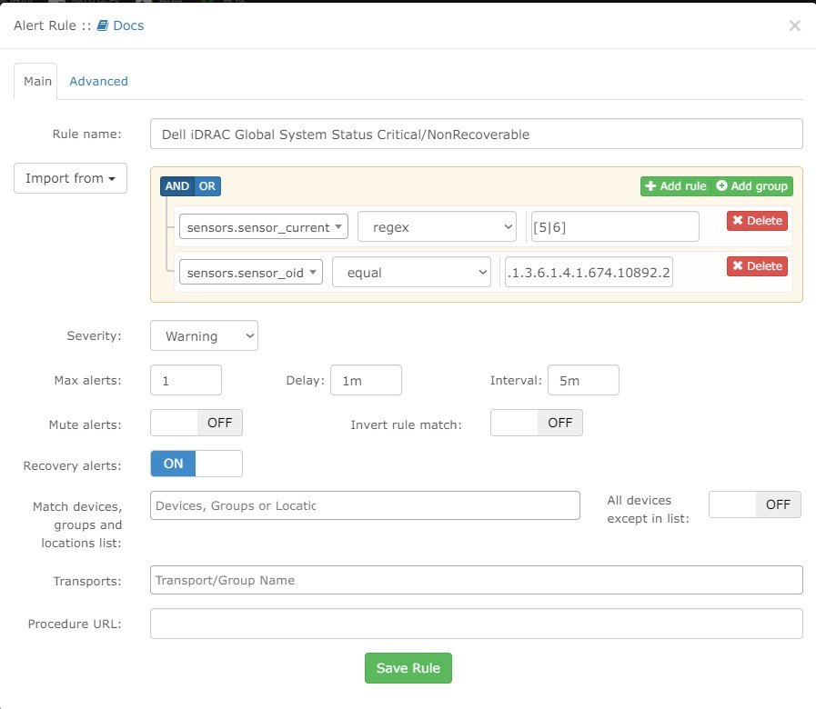

LibreNMS 警報建置實務 LibreNMS Alarm Setting
Contents
此篇筆記紀錄如何使用 LibreNMS 發送 IPMI 警報至 RocketChat WebHook Channel
LibreNMS 動態分組 Dynamic Grouping
動態群組可以自動將裝置依照設定的條件自動加入群組 (新加的裝置也可以喔)。這個功能除了方便 管理/查找 外，待會的警報建置也會派上用場~
LibreNMS Docs-Dynamic Groups
▲ LibreNMS 動態分組功能
觀察 iDrac 裝置的共同特點可以發現 Hardware 欄位都包含 iDrac 廢話王欸 就利用這個當作條件吧!
▲ Hardware 欄位包含 iDrac
但是打開動態群組規則選單卻噴出一大堆類型… 要怎麼知道 “Hardware” 在哪裡呢?
(1) 選取欄位最上方可以搜尋。直接搜尋 “hardware”，卻出現兩個選項 有時候不太好確認到底哪個才是我們要的。雖然這個例子來說 87% 就是 devices.hardware 這個，但這樣就沒辦法打第二點了 所以裝笨一下 謝謝配合
(2) 官方文件有提到類型顯示的方式都是 DB 裡面的 <table>.<column>。就直接進 MariaDB 查詢吧~
登入 mysql
|
|
進入 (使用) librenms
|
|
人生地不熟，show 一下 table
|
|
找到我們要確認的兩個 <table>
|
|
接著用 desc 確認這張表有哪些欄位 (column)
|
|
從網址可以得知 x.x.x.x 這台的 ID 是 129，可使使用
|
|
列出所有。終於可以確認我們要的就是 devices.hardware
RocketChat 建立 Channel/Web Hook 連結
RocketChat Docs-Integrations WebHooks
▲ 建立 RocketChat Channel
▲ 邀請使用者的部分可以先將 bot 邀請進來
▲ 進入管理介面
▲ 整合 -> Incomming -> New
▲ 記得勾選 Enable
2021.03.25 更新: 使用者不用加 @
按下儲存之後再次進入即可複製 Web Hook Links
LibreNMS 增加警報管道 (Alert-Transport)
▲ 增加警報管道
▲ 填入警報名稱、Web hook URL
不過這邊要把 Web hook 的 domain 直接改成 whrocket node 1 的 IP Address Port:3000。
直接使用反代 (詳情請見 Nginx reverse proxy 架構圖、設定檔) domain 會沒辦法重送警報，原因待查。
LibreNMS 設定警報規則 Alarm Rule

▲ 警報規則頁面
Severity: 警報嚴重程度，關係到 RocketChat 那隻
臭貓咪左邊的底色，總共有 OK、Warning、Critical 三個等級。
Max alerts: 警報被觸發期間，警報被發送的次數限制。-1代表不限制，當另外一個選項interval == 0時無效。
Delay: 條件被觸發後延遲多久發送警報，通常會搭配 poller (輪詢器) 設定的時間。
舉例: poller 設定 5 min 輪詢一次，結果 delay 設定 3 min，在還沒下一次輪詢前就會成功發送警報。涼去~
通常會設置 delay 就是不希望因為 網路因素 or 設備反應慢 誤發警報，造成第一線受理人員警報麻痺。
Interval: 多久重新發送一次警報 (How often)。0代表只發送一次，單位有 (s,m,h,d) 秒 分鐘 小時 天。
Mute alerts: 僅顯示在 LibreNMS WebUI 上，不透過設定管道發送警報。
Invert rule match: 當規則沒有被觸發時發送警報 (一個邏輯閘 NOT gate 的概念)
Recovery alerts: 設定成 “ON” 時，狀況恢復會發送警報告知狀況已恢復。並且有 “Time elapsed” 幫你算狀況持續多久~
Match devices,groups and location list: 規則針對的目標，可以是單一裝置、群組、地點清單。
All devices except in list: 字面上的意思: 黑名單
Transports: 警報管道
Procedure URL: 放處理方式文件連結 (例如: bookstack) 給第一線受理人員。
▲ LibreNMS 其實有內建許多範本、食譜 供使用者方便使用/修改
▲ 將規則從範本 (Collection) 導入
在上方搜尋 iDrac，找到我們要的 Global System Status Critical/NonRecoverable
Global System Status 算是一個指標，當整台伺服器出現任一硬體問題時 (包含預設 State 上沒有的外接 RAID Card 陣列中硬碟故障) 就會亮燈
sensors.sensor_current: 代表目前感知器 (sensor) 抓取到的值
sensors.sensor_oid: 是 SNMP 當中的 Object ID。
實際選擇該範本後，可以發現 sensors.sensor_current 利用正規表示法 (regex) 定義值要是 5 或者 6 (進階使用者在範本清單就能看出來)
而且 (AND) sensors.sensor_oid 必須完全等於 .1.3.6.1.4.1.674.10892.2.2.1，才能觸發規則。
Dell Command | Monitor Version 9.1 SNMP Reference Guide
▲ 提到 System state global system status 回傳值代表的意義
other: 1
unknown: 2
ok: 3
nonCritical: 4
critical: 5
nonRecoverable: 6
Dell OpenManage SNMP Reference Guide for iDRAC and Chassis Management Controller | Dell 台灣

使用範本需要親自確認實際抓取到的 OID 路徑是否完全正確
使用範本需要親自確認實際抓取到的 OID 路徑是否完全正確
使用範本需要親自確認實際抓取到的 OID 路徑是否完全正確
確認 OID 路徑
▲ 進入單一裝置 capture debug 模式

▲ 執行 snmp 抓取
將結果複製到慣用的 Editor 上 (推薦開源的 VSCode，注意與 Visual Studio IDE 的差別 兩者截然不同)
搜尋範本上的 .1.3.6.1.4.1.674.10892.2.2.1 後發現少了一個 .0，趕緊補上去
最後記得執行 Alerts 查看目前裝置狀態是否符合任一警報規則
▲ 觸發警報測試
NOC 人員確認狀況查找說明
▲ 從 iDrac 群組進入，找到該 IP
▲ 查看 state 欄位
▲ 以 RAM (ECC RDIMM) 錯誤率飆高 (即將壞掉) 會長這樣
補充一點，以目前 x.x.x.x iDrac 來說雖然抓到 Global System Status 是 nonCritical
其它狀態欄位卻都正常，是因為 RAID6 陣列其中一顆硬碟死去
LibreNMS 沒有針對 RAID 卡內的硬碟做監控 (方法應該有 後續有空再查)
常用警報 (20210717 新增，20220818 更新)
這個段落會記錄常用的警報
【SQL】ESXi CPU AVG usage alert
本來使用 processors.processor_perc_warn 作為判斷標準，但發現無法正確被觸發!(明明 mempools.mempool_perc 運作正常 @@)
加上如果使用 processors.processor_usage 只要有單一核心 usage 高於設定值警報就會被觸發。
因此使用官方提供的 SQL 語法來制定
|
|
main頁面還是需要隨便掛一個條件式，再使用 SQL overwrite。
【DIMM】Dell iDRAC Memory Status notGood
修改自範本 Dell iDRAC Memory Status Critical
在 [GitHub]LibreNMS iDrac-MIB 當中搜尋: -- Memory Device Table 可以找到。 memoryDeviceStatus 在第五項，所以
-- OID Format: 1.3.6.1.4.1.674.10892.5.4.1100.50.1.<a>.<i1>.<i2>
當中的 <a> 是 5
使用 ObjectStatusEnum 列舉清單，這個狀態在 MIB 的開頭有定義 (208 行)。
|
|
LibreNMS 設定紀錄
|
|
【RAID 狀態】Dell iDRAC Virtual Disk Failed/Degraded
修改自範本 Dell iDRAC Virtual Disk Failed/Degraded
在 [GitHub]LibreNMS iDrac-MIB 當中搜尋: -- Virtual Disk Table 可以找到 virtualDiskState。
But 我不知道為什麼會是 .10892.5.5.1.20.140.1.1."4" 而不是 .10892.5.5.1.20.140.1.1."3" 冏
實際上去撈 snmp 也沒有 "3" 的項目，就這樣吧… 範本是對的
|
|
LibreNMS 設定紀錄
|
|
Author
LastMod 2022-12-26 (6ef3b30)